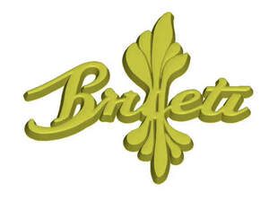

Trade Mark Journal No.2025/044 31 October 2025
UK00004281408 21 October 2025 (9,14,25)

- Class 9
- Glasses; Glasses frames; Sunglasses.
- Class 14
- Jewelry; Jewellery; Necklaces [jewelry]; Jewelry brooches; Necklaces [jewellery]; Brooches [jewellery, jewelry (Am.)]; Bracelets [jewellery, jewelry (Am.)]; Bracelets [jewelry]; Bracelets [jewellery]; Charms [jewellery, jewelry (Am.)]; Rings [jewellery, jewelry (Am.)]; Pendants [jewelry]; Jewellery brooches; Lockets [jewellery, jewelry (Am.)]; Pendants [jewellery]; Jewelry charms; Diamond jewelry; Gold jewellery; Clasps for jewelry; Rings [jewelry]; Charms [jewellery]; Jewellery charms; Jewellery items; Shoe jewelry; Rings being jewellery; Rings [jewellery]; Jewellry; Jewelry chains; Chains [jewelry]; Clasps for jewellery; Jewelry boxes; Jewellery stones; Jewellery chains; Chains [jewellery]; Jewellery chain; Jewelry boxes of metal; Jewellery boxes; Jewellery rope chain for necklaces; Jewellery made from silver; Jewellery made from gold; Jewellery in non-precious metals.
- Class 25
- Clothing; Visors [clothing]; Gloves [clothing]; Gloves as clothing; Headbands for clothing; Jackets [clothing]; Clothes; Parts of clothing, footwear and headgear; Denims [clothing]; Hats (Paper -) [clothing]; Shorts [clothing]; Hoods [clothing]; Bottoms [clothing]; Jackets (Stuff -) [clothing]; Stuff jackets [clothing]; Golf clothing, other than gloves; Jerseys [clothing]; Tops [clothing]; Furs [clothing]; Woolen clothing; Jackets being sports clothing; Garments for protecting clothing; Ready-to-wear clothing; Mitts [clothing]; Belts [clothing]; Belts for clothing; Linen clothing; Knitted clothing; Knitwear [clothing]; Leather clothing; Clothing of leather; Leather (Clothing of -); Cashmere clothing; Cowls [clothing]; Silk clothing; Sports clothing.
Raphael brumant-etienne